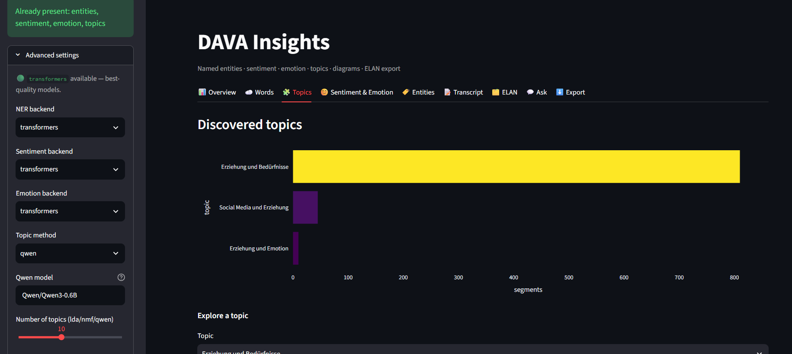
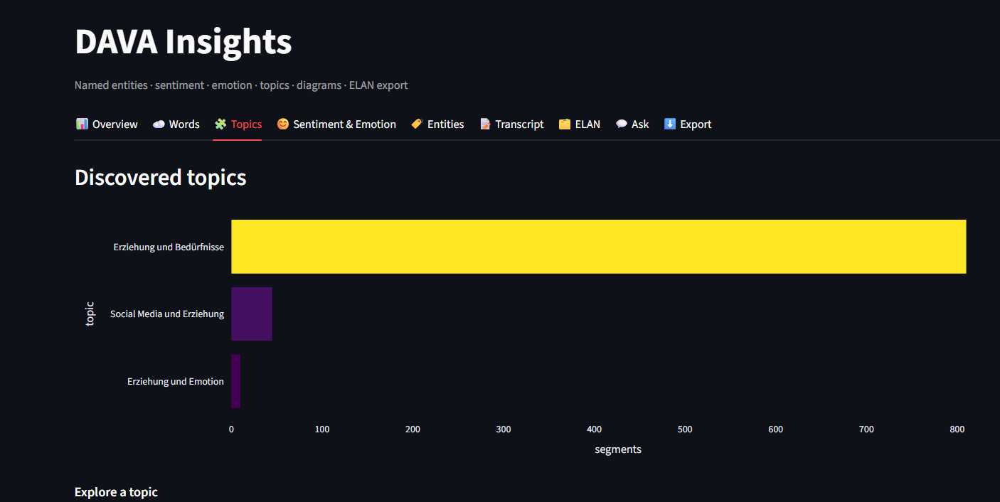
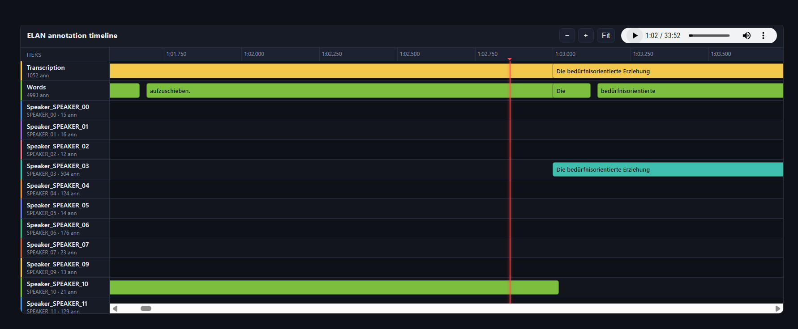
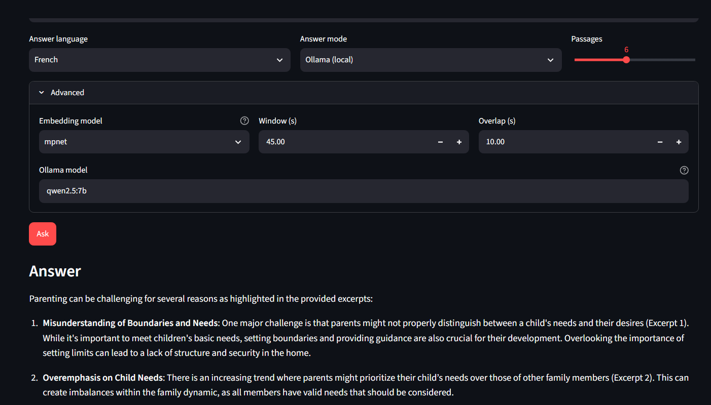

DAVA is a local, multilingual pipeline for audio and video. It transcribes speech, labels who spoke, adds meaning, lays everything on a timeline, and answers your questions with the exact timestamps, all on your own machine.
Four things happen automatically. Nothing you upload ever leaves your computer.
Every line is turned into text, labelled with who spoke, and stamped to the exact second.
Themes, sentiment and emotion, and the people, places and organisations that come up.
Speakers and layers on a playable timeline, exported to ELAN, the linguist's standard.
Ask a question in plain language and get an answer that points back to the moment it came from.
You press a button; the pipeline does the rest. Steps one and two run on the recording machine, the rest live in the dashboard.
Remove music and noise so no word is lost.
Speech to text, with speaker labels and timings.
Topics, sentiment, emotion, names and places.
A time-aligned timeline, exported to ELAN.
One dashboard with a tab for every layer.
Question the recording, get sourced answers.
Load a recording once. Each kind of result is a click away.
Length, word count, number of speakers, and the main language, with the language mix and who spoke the most. A summary before you dive in.

The main subjects of the recording, discovered automatically. A longer bar means the theme covers more of the conversation.

Every speaker and every annotation as a track on a shared time axis. Click a block to play that moment, and export the whole thing to ELAN for reuse.

Ask in plain language, in any of the three languages, and pick the language you want the answer in. The answer is built only from your recording and cites the exact timestamps, so you can replay and verify every point.

If your work involves people talking and you need to find, compare, or cite what was said, DAVA is for you.
Search hearings and depositions, jump to the exact statement, and cite it by timestamp.
Review patient interviews and track themes and tone as a research aid, locally and confidentially.
Build time-aligned, ELAN-ready annotated corpora across languages.
Log hours of footage, find who says what and when, and locate scenes by topic.
Transcribe and search interview archives, and find every mention of a person or place.
Analyse debates and consultations by topic, sentiment, and speaker, over time.